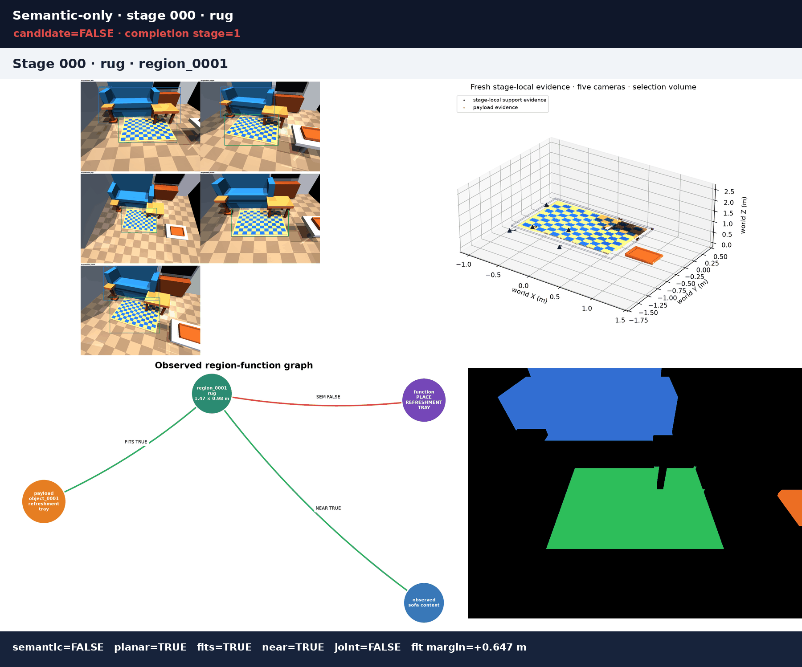
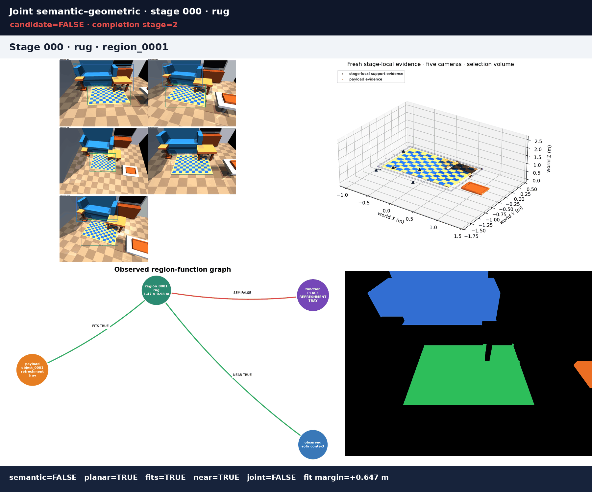
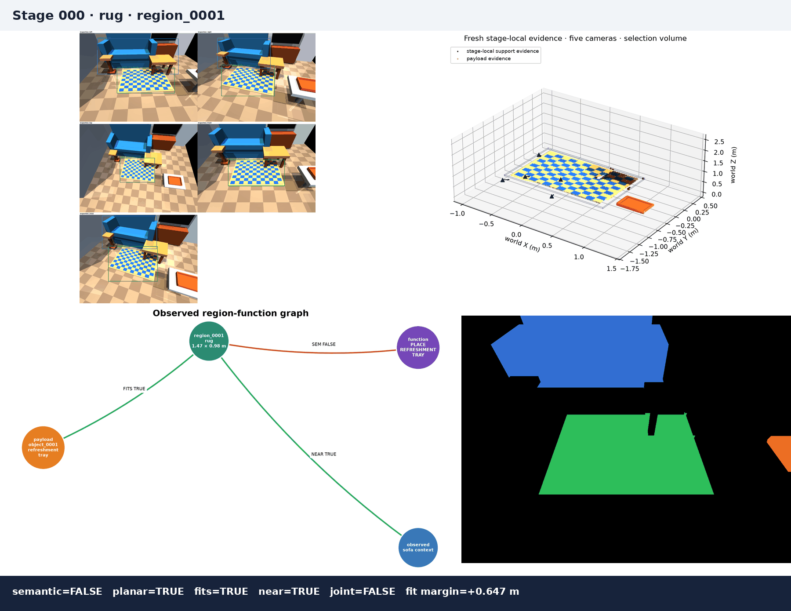

PRESENTATION REPORT · LIVING-ROOM REGION ABLATION 1
Semantic–geometric destination-region grounding
Goal: Place the refreshment tray on a suitable living-room surface within easy reach of the sofa.
Scene: L2_living_room_region_ablation1_primary3 observed regions5 RGB-D cameras per stageSame evidence for all modesNo robot / FM / TAMP
What was run
Rendered RGB-D + masks→five-view world cloud→stage-local region evidence→YOLO-World semantics→geometry relations→joint verified handoff
The benchmark searches for a destination surface for one measured refreshment tray. The three acceptance modes reuse the exact same saved observations; only their acceptance logic changes.
Headline outcomes
Mode
Selected region
Stage
Interpretation
Production-valid?
Geometry-only
region_0001
0
Incorrect diagnostic: rug
NO
Semantic-only
region_0002
1
Incorrect diagnostic: undersized side table
NO
Joint semantic–geometric
region_0003
2
Correct: coffee table
YES
Stage-by-stage decisions
Stage
RGB parent
Geometry-only
Semantic-only
Joint
Joint reason
000
rug
TRUE
FALSE
FALSE
REGION_REJECTED_SEMANTIC
001
side_table
FALSE
TRUE
FALSE
REGION_REJECTED_FIT
002
coffee_table
TRUE
TRUE
TRUE
accepted
Three individual policy ablations
Geometry-only
Checks planar support, payload fit, and distance to the sofa, but ignores what the RGB detector says the surface is. The rug therefore becomes an intentional false positive at stage 0.
Open GIF and outcome data
Selected region_0001 at stage 0.
Semantic-only
Accepts a detector-supported serving-surface category, but ignores measured payload fit. It therefore stops incorrectly at the small side table in stage 1.
Open GIF and outcome data

Selected region_0002 at stage 1.
Joint semantic–geometric
Requires semantic compatibility AND PLANAR_SUPPORT AND FITS_ON AND NEAR_SEATING_AREA. It rejects both counterexamples and selects the coffee table at stage 2.
Open GIF and outcome data

Selected region_0003 at stage 2.
Compatibility matrix
Each row is a generic persistent region. Green means the saved evidence supports that gate; red means it refutes it. Joint acceptance requires every required column to be TRUE.
Uses only the fresh region point cloud. A dominant horizontal plane must have enough support, sufficient planarity, acceptable normal alignment to gravity, and valid multi-view coverage.
FITS_ON(payload, region)
The measured payload footprint plus edge clearance is tested against the measured usable support extents at 0° and 90°. The minimum signed dimension margin determines TRUE/FALSE.
NEAR_SEATING_AREA(region, sofa)
The measured region centroid is compared with the sofa context reconstructed from current visible evidence. It passes when the measured distance is within the configured maximum.
Joint gate
semantic compatibility AND PLANAR_SUPPORT AND FITS_ON AND NEAR_SEATING_AREA. Required UNKNOWN or FALSE evidence cannot complete the task.
Verified production handoff
Verified destination:region_0003 at stage 2 (COFFEE_TABLE)
Relation
Inputs
margin
result
FITS_ON
payload 0.416 × 0.289 m; support 0.699 × 0.541 m
0.211 m
TRUE
NEAR_SEATING_AREA
distance 1.206 m; maximum 1.650 m
0.444 m
TRUE
Full progression animation
Open the GIF version

Rendered scene and component audit
Expand every stage to inspect the scene, five RGB detections, association overlays, stage-local point cloud, region mask, and graph. These are the actual artifacts used by the report.
Geometry consumed typed, fresh RegionMeasurementEvidence and PayloadMeasurementEvidence only. Cumulative visualization clouds, complete-room combined clouds, configured geom sizes, hidden simulator geometry, and detector labels are not geometric measurement inputs. RGB semantics come from rendered pixels and are associated through visible masks. No placement, robot motion, navigation, FM, LLM, VLM, planning, or TAMP execution occurs.


{kind=link}
{kind=link}
{kind=link}
{kind=link}
{kind=link}
{kind=link}
{kind=link}
{kind=link}
{kind=link}
{kind=link}
{kind=link}
{kind=link}
{kind=link}
{kind=link}
{kind=link}
{kind=link}
{kind=link}
{kind=link}
{kind=link}
{kind=link}
{kind=link}
{kind=link}
{kind=link}
{kind=link}